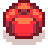

Template:Bundle/doc
Jump to navigation
Jump to search
Description
This template is used to insert a colored bundle icon, bundle name, and link to any Bundle.
Use
This template can be used by entering the following onto a relevant page.
{{Bundle|''name''}}
Valid bundle names (case insensitive):
- spring, spring forage, spring foraging
- summer, summer forage, summer foraging
- fall, fall forage, fall foraging
- winter, winter forage, winter foraging
- construction
- exotic, exotic forage, exotic foraging
- spring crop, spring crops
- summer crop, summer crops
- fall crop, fall crops
- quality, quality crops
- animal
- artisan
- river, river fish
- lake, lake fish
- ocean, ocean fish
- night, night fish, night fishing
- crab, crab pot
- specialty, specialty fish
- blacksmith, blacksmiths, blacksmith's
- geologist, geologists, geologist's
- adventurer, adventurers, adventurer's
- chef, chefs, chef's
- dye
- field, research, field research
- fodder
- enchanter, enchanters, enchanter's
- 2.500, 2,500, 2500
- 5.000, 5,000, 5000
- 10.000, 10,000, 10000
- 25.000, 25,000, 25000
- missing
Remixed Bundle names (case insensitive):
- sticky
- wild_medicine, wild medicine
- rare_crops, rare crops
- garden
- fish farmers, fish_farmers, fish farmer's
- brewer, brewers, brewer's
- master fishers, master fisher's, fishers, fisher's
- quality fish
- homecook, home cook
- childrens, children's
- forager, foragers, forager's
- engineers, engineer's
- treasure hunter, treasure hunters, treasure hunter's
- engineer, engineers, engineer's
- homecook, home cook, home cook's
- spring remixed, spring forage remixed, spring foraging remixed
- winter remixed, winter forage remixed, winter foraging remixed
- quality remixed, quality crops remixed
- animal remixed
- dye remixed
- adventurer remixed
- forest
- helper, helper's, helpers
- spirits eve, spirit's eve
- winter star
Optional Parameters
- image size other than 24px (e.g., 16)
- text describing the room in the Community Center where the bundle is located (enter "y" for yes)
These parameters are not named, but indicated by order. If size is omitted, the pipe character | must still be used if you want the room in the Community Center to be displayed.
Examples
{{Bundle|Spring Foraging}}
{{Bundle|animal|16}}
{{Bundle|spring|36}}
{{Bundle|exotic||y}}
 Exotic Foraging Bundle in the Crafts Room
Exotic Foraging Bundle in the Crafts Room
{{Bundle|chef|48|y}}
 Chef's Bundle on the Bulletin Board
{{Bundle|Engineers||y}}